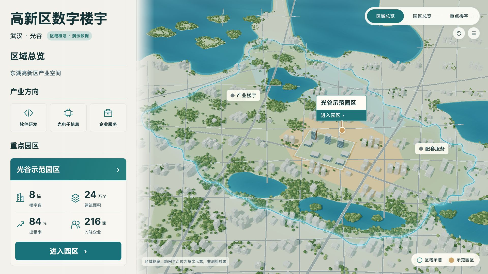
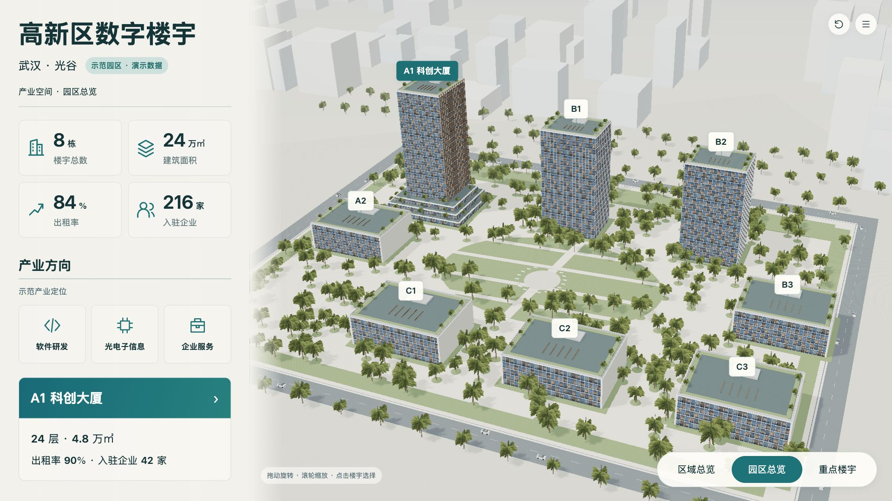
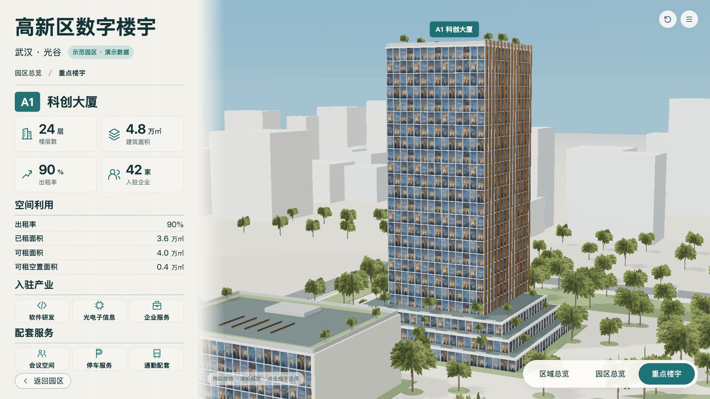
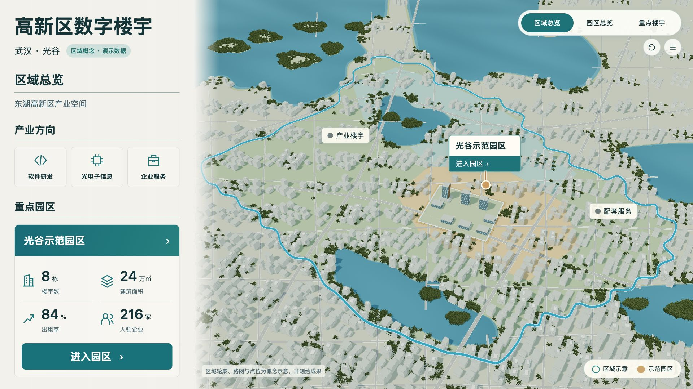
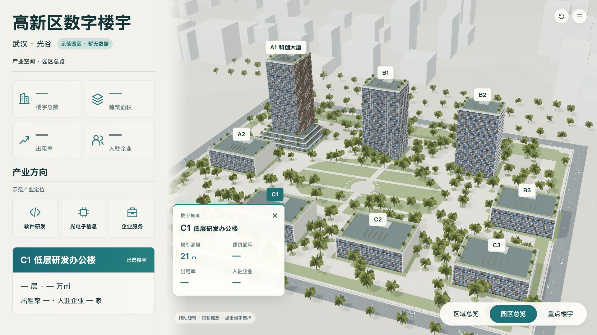
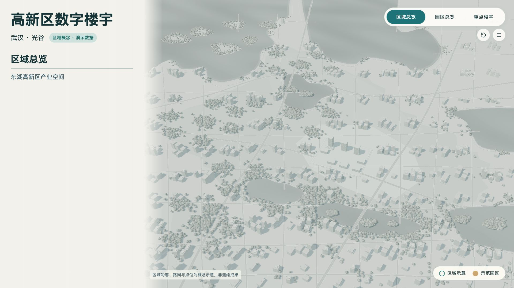
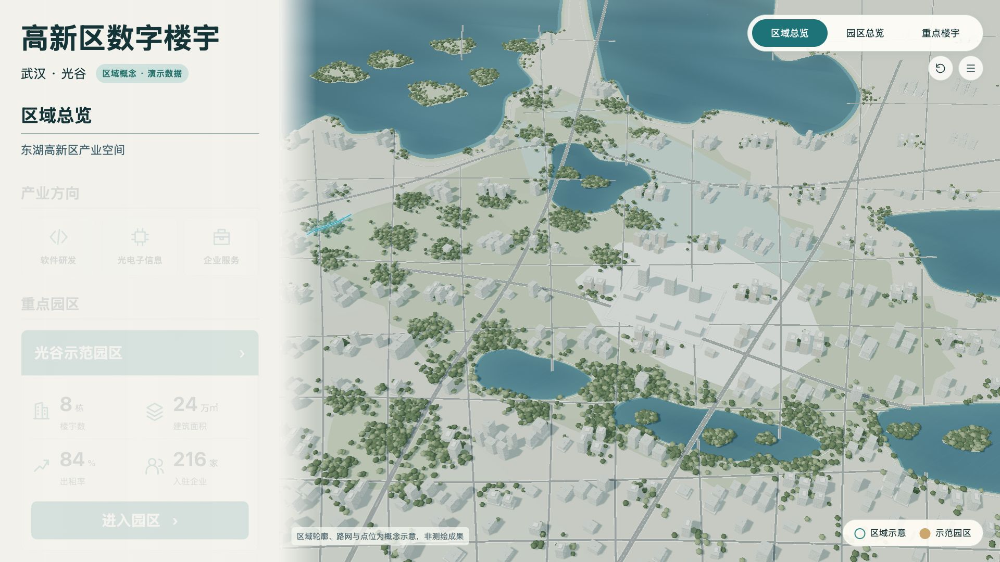
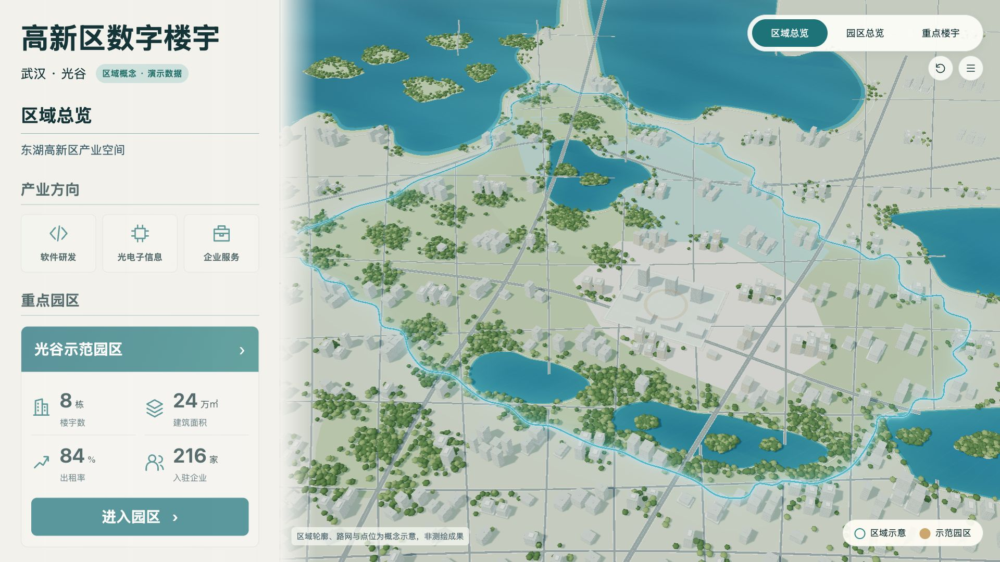

所有图片保留原始比例，不裁切、不拉伸；确认基准未改。正常数据，默认相机；车辆按实际截图时刻运动。阶段图为网页实拍，不以四帧替代动态交互检查。
DATA-19：各栋经营演示指标补齐，左右同源；汇总守恒与缺失态测试通过。LAKE-19：两片湖泊及平滑岸线包含关系通过。MOTION-19：统一时间线、重播及返回逻辑通过；减弱动效有单元测试，未修改系统设置实测。LINE-19：蓝色细线与模糊光晕分离，已逐版截图复核。前版v19a湖面顶点色导出异常，v19c光晕过强，原证据保留，最终修正后重新导出。
R-05-REALISM仍开放：道路与街区密度/层级、建筑个体差异、水体及湖岸景观精细度仍比原设计简化。工程检查通过不等于整体视觉通过。资源及性能见runtime-v19.json，硬件与长时限制见iteration-v19.md。










